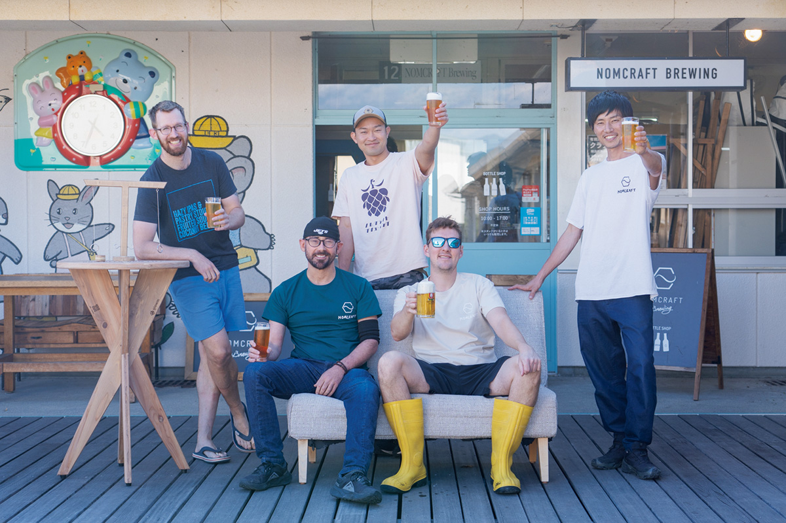
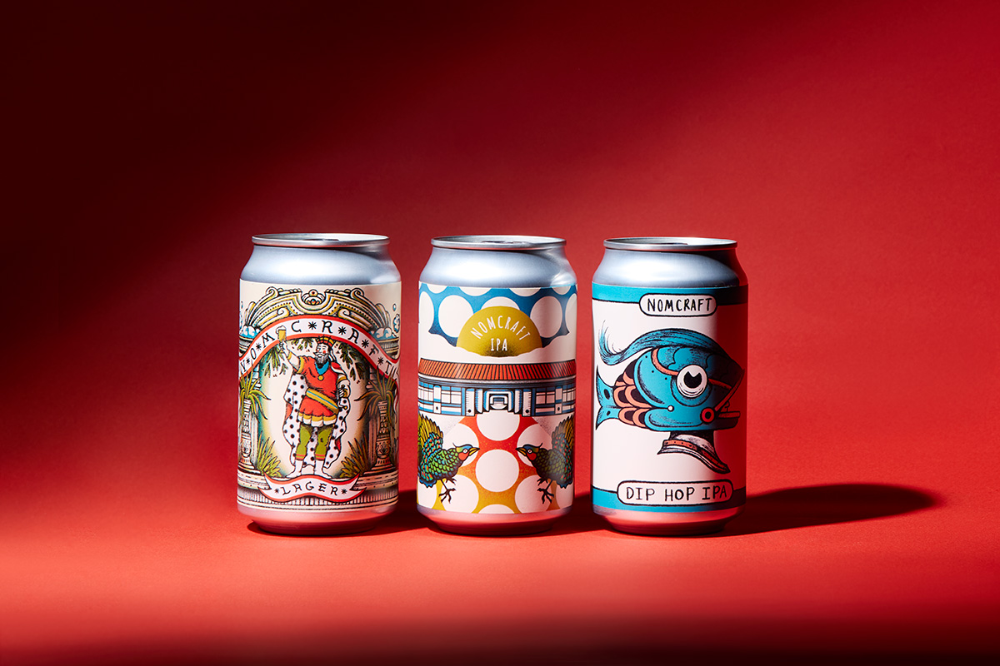
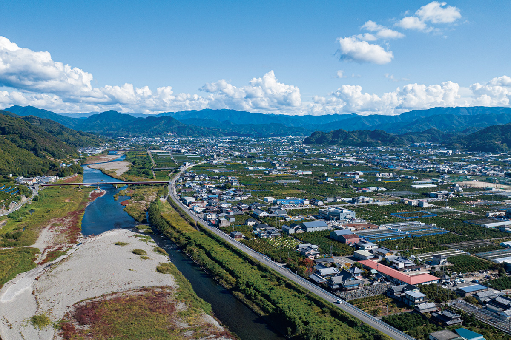
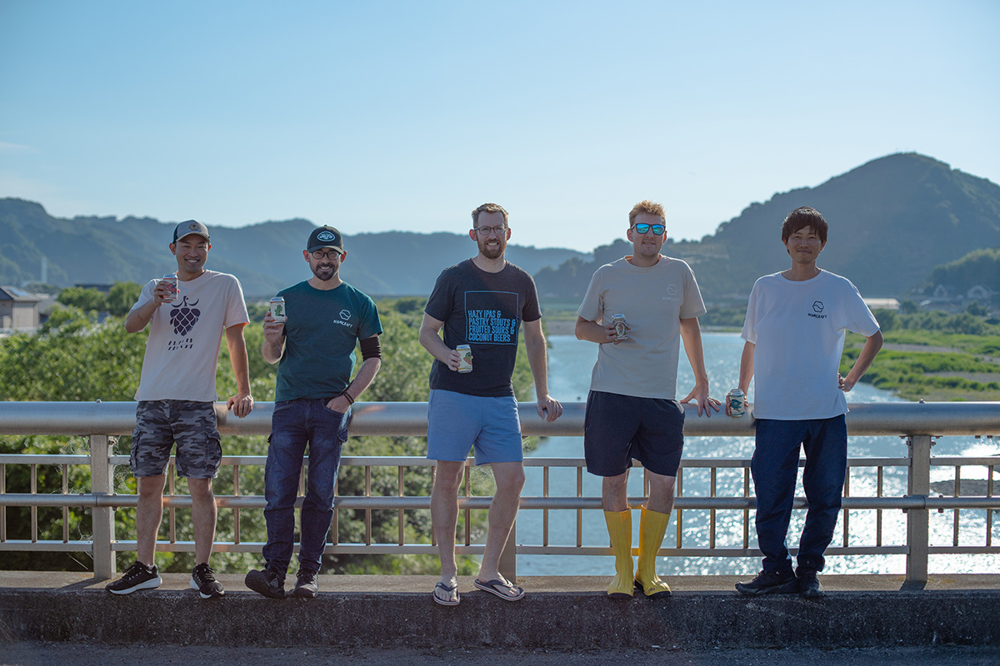
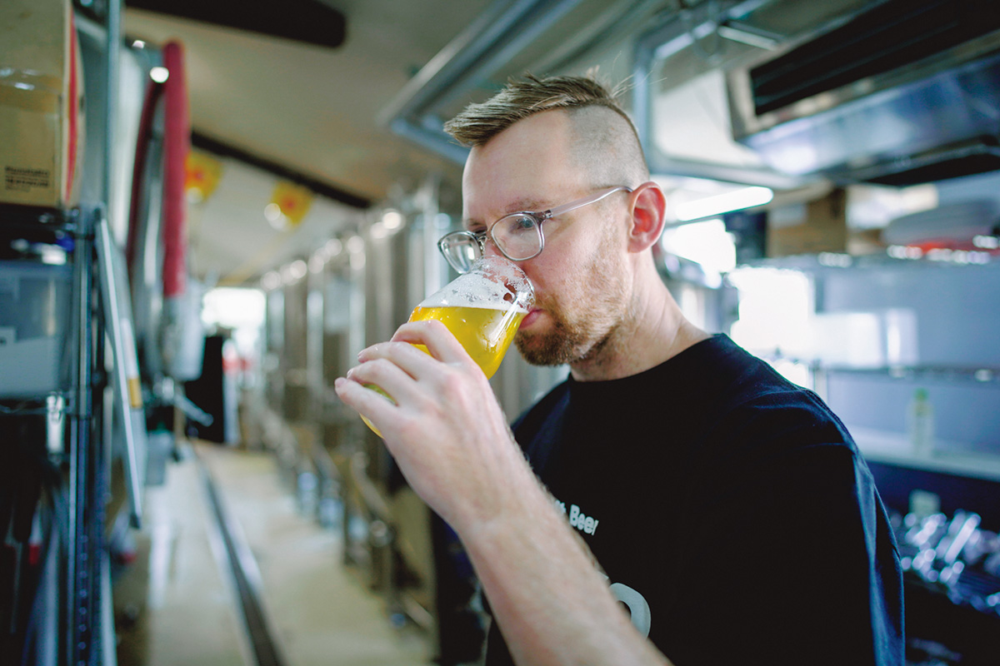
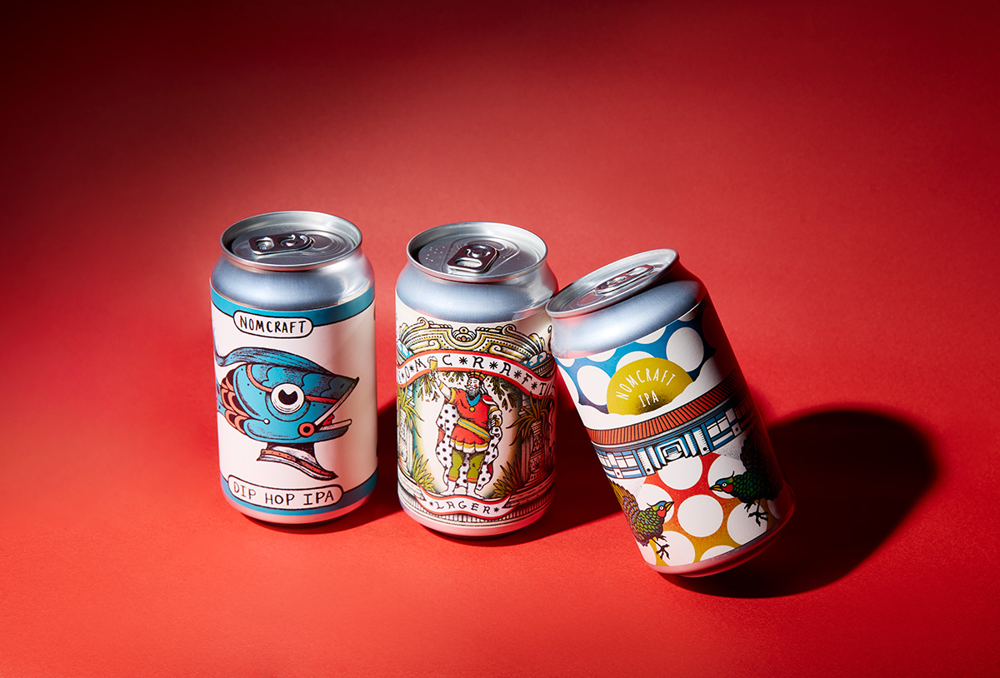
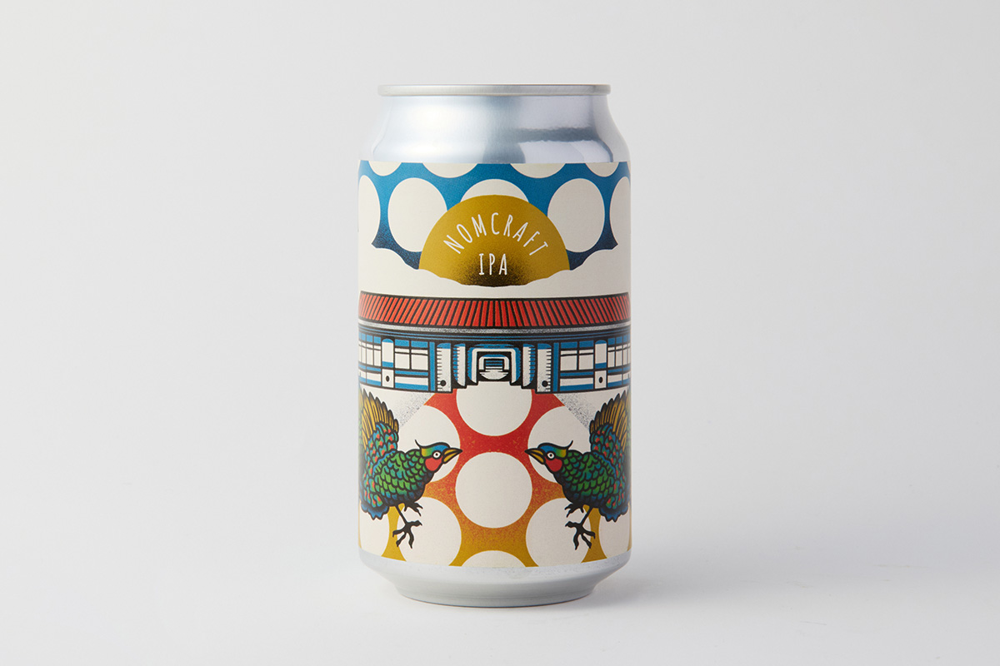
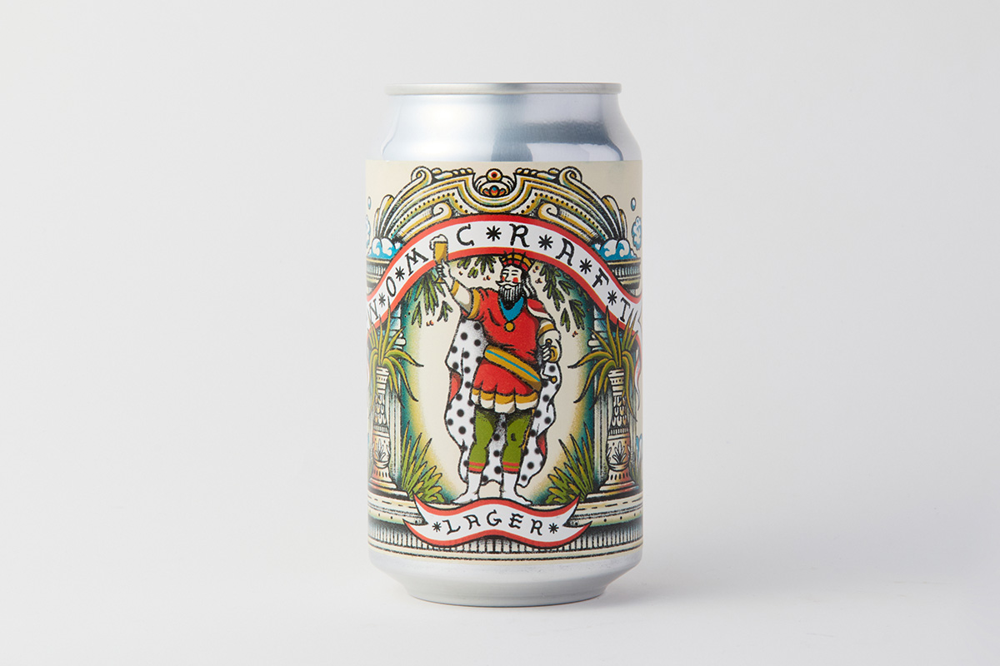
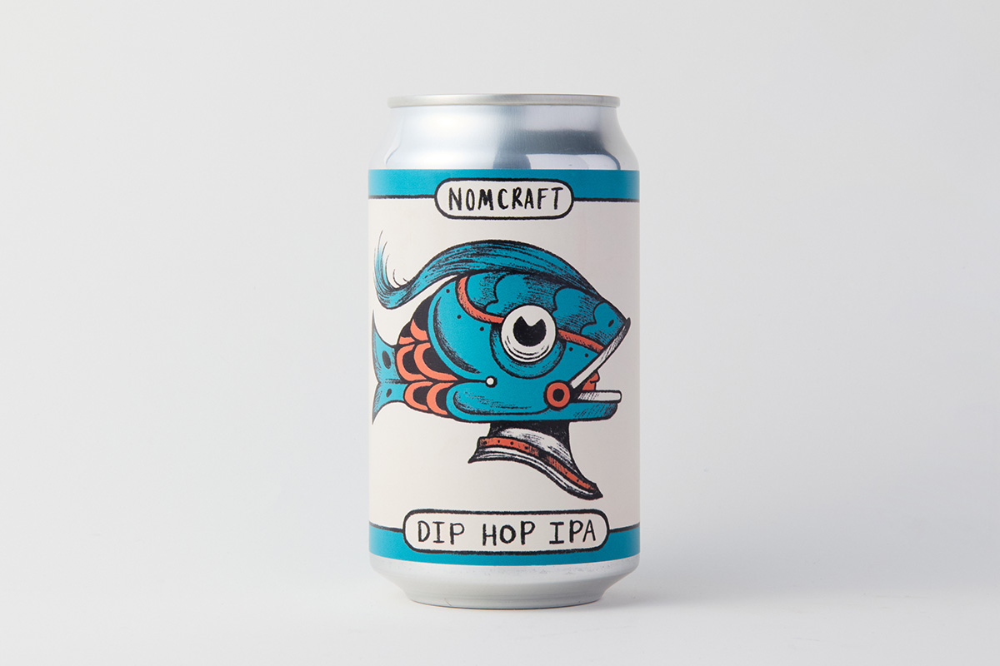

Префектура Вакаяма · Аридагава · пиво
«Номкрафт»: пиво мирового уровня из бывшего детского сада в Аридагаве

Аридагава, городок в префектуре Вакаяма с населением чуть больше 20 000 человек, варит крафтовое пиво мирового уровня. Пивоварня «Номкрафт» выросла из бывшего детского сада, и сегодня её пиво знают любители и в Японии, и за рубежом.
Начало
Детский сад, ставший пивоварней
Пивоварня «Номкрафт» (NOMCRAFT Brewing) появилась в 2019 году в комплексе «Гостиная» (THE LIVING ROOM), который устроили на месте закрытого детского сада. Своей задачей команда называет создание весёлого сообщества вокруг крафтового пива.

В Японии около 40% муниципалитетов относят к тем, которым грозит исчезновение из-за убыли населения. Аридагава не исключение, и чтобы переломить ситуацию, город запустил совместный проект с американским Портлендом.
Портленд хорошо знают и те, кто занимается развитием регионов, и любители пива. Для первых это пример города, который сумел поднять местную экономику, для вторых пивной рай, где в бывших школах работают маленькие пивоварни. Аридагава взяла Портленд за образец, и в городе как раз задумали превратить закрытый детский сад в общественный комплекс.

Команда
Пиво, сваренное случайно
Что разместить в комплексе, долго не могли решить. Команда, которая занималась развитием города, поехала со своим стендом на ярмарку Портленда в Осаке. Там они познакомились с двумя американцами, которые преподавали в Японии английский, интересовались пивоварением и очень хотели пить в Японии настоящий крафт. Они быстро нашли общий язык, и план варить пиво в новом комплексе сдвинулся с места.

«Вода Аридагавы как чистый холст. Если её немного подготовить, сварить можно что угодно»
представитель пивоварни, который живёт в Аридагаве уже 20 лет
Лучшего места для пивоварения, по его словам, не найти. Сегодня пиво «Номкрафт» раз за разом получает награды на конкурсах в Японии и за рубежом, хотя начиналось всё с цепочки случайностей.

Сначала здесь варили пиво в американском стиле, а в последние годы пивоварня перешла к экспериментам и берёт идеи из любых стран. Возможными их делает главный пивовар, который тоже начинал в Японии учителем английского. Он одним из первых узнаёт о новых технологиях и модах в мире пива, и пивоварня всё время меняется.
Город
Пиво как повод приехать
В 2025 году «Номкрафт» открыла пивные бары в Осаке и в городе Вакаяме, и знакомства, которые там завязываются, тоже часть работы на город.

«Пока Вакаяма выглядит живой, и угрозу исчезновения я не очень чувствую. Но остановить это хочется. Мы надеемся, что „Номкрафт“ станет поводом приехать в Аридагаву и рекламой для всей Вакаямы. Одна из наших задач в том, чтобы нас больше знали именно как пивоварню из Аридагавы»
представитель пивоварни
Кроме незаменимой воды, в Аридагаве много местных продуктов, которые идут в пиво как дополнительное сырьё: мандарины, японский перец сансё. Но многое здесь не так, как в Портленде, где налог на алкоголь ниже, а хмель растёт под боком. Японское крафтовое пиво стоит дорого, и около 60% его выпивают в Токио и окрестностях. Возможно, облик города изменится, когда в самой Аридагаве станет больше людей, которые пьют местное пиво просто так, без повода.
Пиво
Три сорта для знакомства

«Номкрафт ИПА» сварен по традиционной американской технологии. Горечь и насыщенность уравновешены, а в аромате чувствуются сосна и цитрус.

«Номкрафт Лагер» сварен в традиционном южнонемецком стиле хеллес. Лёгкое тело хорошо подходит к японской еде вроде темпуры и якитори.

В «Найт Фишерман» пивовары следят за температурой воды и так вытягивают из хмеля сочный вкус. Горечь у этого пива чистая и освежающая. Солод для всех трёх сортов делают в Германии.
Пивоварня «Номкрафт»
- Адрес
- префектура Вакаяма, уезд Арида, Аридагава, Нагата, 546-1
- Сайт
- nomcraft.beer
Фото: Сихо Акияма.